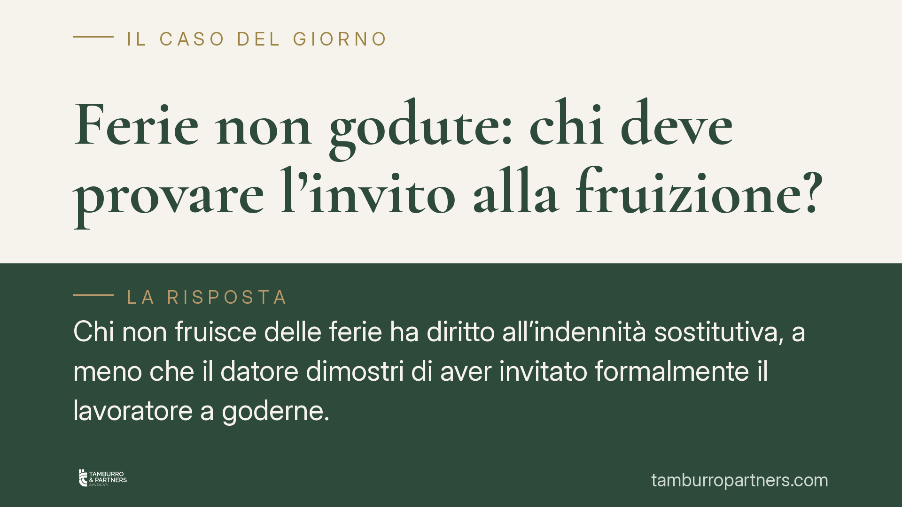

Ferie non godute: chi deve provare l'invito alla fruizione?
Chi non fruisce delle ferie ha diritto all'indennità sostitutiva, a meno che il datore dimostri di aver invitato formalmente il lavoratore a goderne. Una recente pronuncia della Corte d'Appello di Ancona applica questo principio anche ai dirigenti pubblici. Vediamo l'inquadramento normativo, i limiti della monetizzazione nel pubblico impiego e le condotte da adottare.

Il fatto
Una sentenza della Corte d'Appello di Ancona (n. 73/2026, dato da verificare presso le fonti ufficiali) affronta un tema ricorrente nel contenzioso di lavoro: quando il datore deve corrispondere l'indennità sostitutiva per ferie non godute.
La decisione applica un principio già consolidato in sede europea: l'onere di provare di aver messo il lavoratore nelle condizioni effettive di fruire delle ferie grava sul datore. In assenza di tale prova, il diritto all'indennità resta esigibile. L'elemento di interesse è l'estensione del ragionamento alla figura del dirigente pubblico.
Inquadramento normativo
Il diritto alle ferie ha copertura costituzionale: l'art. 36, comma 3, Cost. lo qualifica come irrinunciabile. Sul piano legislativo, l'art. 10 del D.Lgs. 66/2003 fissa il periodo minimo di quattro settimane e vieta, di regola, la sostituzione con indennità durante il rapporto, salvo il caso di cessazione. La disciplina generale della determinazione del periodo feriale resta quella dell'art. 2109 c.c., integrata dalla contrattazione collettiva di comparto.
Nel pubblico impiego opera un limite ulteriore: l'art. 5, comma 8, del D.L. 95/2012 (conv. in L. 135/2012) vieta la monetizzazione delle ferie non godute. La Corte costituzionale (sent. n. 95/2016) e la giurisprudenza di legittimità hanno però chiarito che il divieto non si applica quando la mancata fruizione non sia imputabile alla volontà del dipendente: in particolare, nei casi di cessazione del rapporto per cause non prevedibili (malattia, decesso, collocamento a riposo non programmabile). In tali ipotesi la monetizzazione torna dovuta, per non svuotare il diritto costituzionale.
L'onere della prova secondo la Corte di Giustizia UE
Il punto centrale è chi debba dimostrare cosa. La Corte di Giustizia UE, con le sentenze del 6 novembre 2018 (cause C-619/16 e C-684/16), ha stabilito che il diritto alle ferie non si estingue automaticamente per il solo fatto che il lavoratore non le abbia richieste. Il datore deve provare di aver invitato il dipendente, in modo formale e tempestivo, a fruirne, informandolo che in caso contrario le ferie andrebbero perse.
Solo se il datore dimostra questa diligenza, e il lavoratore ha comunque scelto di non godere del riposo, il diritto (e la relativa indennità) può considerarsi estinto. Diversamente, l'indennità resta dovuta.
L'estensione ai dirigenti pubblici
Qui la pronuncia anconetana solleva un profilo delicato. Si potrebbe obiettare che il dirigente, titolare di autonomia organizzativa e di poteri gestionali, sia in grado di autodeterminare i propri periodi di riposo: da qui la tentazione di addossargli l'onere della mancata fruizione.
La lettura che privilegia la tutela europea, invece, non fa dell'autonomia apicale una presunzione di rinuncia. L'amministrazione, in quanto datore, resta gravata dall'onere di documentare l'invito alla fruizione e l'impossibilità organizzativa eventualmente addotta. L'autonomia del dirigente rileva sul piano dell'autoorganizzazione del lavoro, ma non trasforma in scelta libera ciò che deriva da esigenze di servizio o da carichi che rendono di fatto impraticabile il riposo. Si tratta di un equilibrio ancora in assestamento, che merita cautela finché la giurisprudenza di legittimità non lo consolidi.
Implicazioni pratiche
Per il datore, privato o pubblico, il messaggio è netto: la passività non protegge. Non basta che le ferie risultino non richieste; occorre una traccia documentale dell'invito a fruirne.
Per il lavoratore, il mancato godimento non equivale a rinuncia. Il diritto all'indennità resta azionabile, salvo prova contraria a carico del datore. Va però distinta l'ipotesi del divieto di monetizzazione nel pubblico impiego dal caso di mancato godimento non imputabile al dipendente, in cui l'indennità torna dovuta.
Cosa fare in concreto
- Datore privato: predisponete comunicazioni scritte e datate che invitino il dipendente a programmare le ferie residue, indicando le conseguenze della mancata fruizione. Conservate gli avvisi.
- Amministrazione pubblica: applicate lo stesso onere informativo anche verso il personale dirigenziale, documentando eventuali esigenze di servizio ostative al riposo.
- Lavoratore: conservate le richieste di ferie e gli eventuali dinieghi; annotate le ragioni organizzative che hanno impedito la fruizione.
- In caso di cessazione: verificate se ricorra un'ipotesi di mancato godimento non imputabile, che legittima la monetizzazione anche nel pubblico impiego.
- Prima di agire in giudizio: verificate la prescrizione del credito e la disciplina del CCNL di comparto applicabile.
Disclaimer
Contributo informativo a cura di Tamburro & Partners - Avv. Giuseppe Tamburro. Non costituisce parere legale.
Ogni storia di lavoro ha i suoi tempi.
Se gestisci HR e vuoi un confronto su contenzioso, ispezioni o licenziamenti, scrivi allo studio. Ti rispondiamo entro un giorno lavorativo.